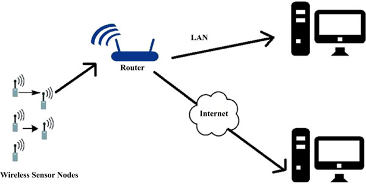
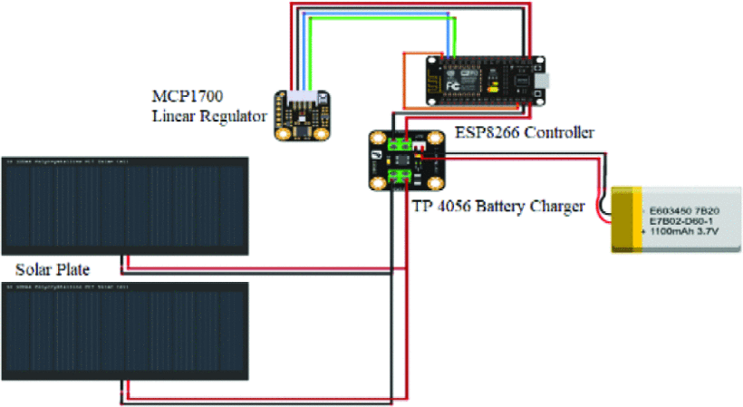
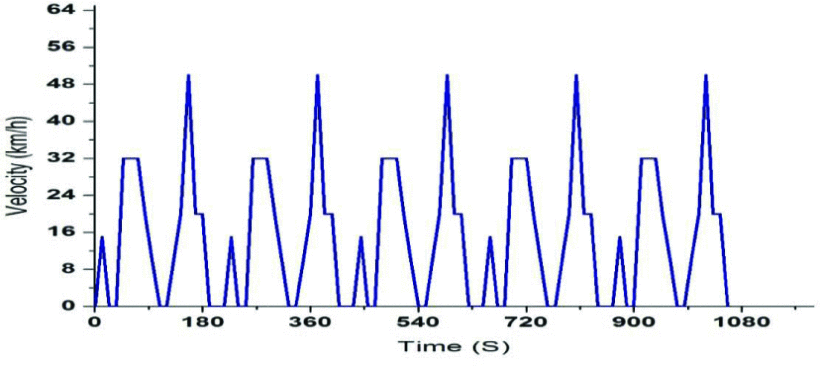
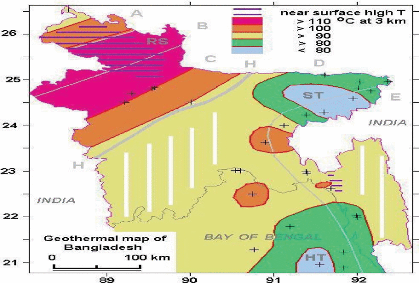
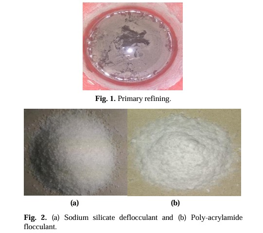

Development of LOCAL-IP based Environmental Condition Monitoring using Wireless Sensor Network
In this paper, environmental monitoring system is implemented using a wireless sensor networking (WSN)
via a local internet protocol (IP) utilizing Wi-Fi media. For enchanting data, DHT-11 (Temperature and
Humidity sensor) and MQ-6 (LPG gas sensor) are being used.
DOI

A WSN (Wireless Sensor Network) Approach for Controlling the Actuator Wirelessly through Database
Interaction
This research study explores the wireless sensor networking, where sensor data is transmitted to a local
database via a nearby server. The primary focus of this research study is real-time environment
monitoring systems and wireless control and actuation systems. This research study incorporates the DHT
11 (Temperature and Humidity) and MQ-6 (LPG Gas) sensors. Selecting an appropriate controller is crucial
to attaining desired system attributes like high-speed precision and meeting requirements for precise
motion control at high speeds.
DOI

Integration of Battery & Ultracapacitor for Low Weight Electric Vehicle for
Bangladesh
This paper portrays the benefits of introducing an ultracapacitor into a battery pack of an urban
electric vehicle drive train.
Simulations are done taking two basic scenarios into consideration: fresh cells and half-used battery
cells.
The simulations show that the lower the temperature higher the hybrid system efficiency.
Data from real world are considered to conduct this study.
Simulations are done considering modified Bangladeshi drive cycle for low weight vehicles.
Several issues like volumetric, gravimetric and cost issues of hybridization are present in this paper.
By this system the power loss of the system can be reduced by up to 5% to 10%. Finally, hybridization
not only increases the efficiency of the energy storage system also increases the power train efficiency
and battery lifespan.
DOI

Current and future prospects of geothermal energy in Bangladesh
In this modern era, geothermal energy is vastly used for producing electricity and it is also a very
interesting choice for Bangladesh for the sake of producing electricity. The paper mainly focuses on the
production of electricity by using an efficient technique. Applying this process, the cost of producing
electrical energy is comparatively low for longerterm purpose.
Moreover, mineral water and germicide components can also be produced after a few refining processes.
DOI

Locally available Clays of Bangladesh as a Replacement of imported Clays for
Ceramic Industries
Sorting In Bangladesh, generally imported clays are used as the main ingredient in ceramicware
industries. Though locally available clays can be refined and used instead of imported ones to minimize
the high manufacturing cost.
In this research, 3 locally available clays were investigated both mechanically and spectrally.
The XRF analysis of local non-refined clays in contrast to imported clays has indicated the presence of
excess SiO2 content (about 35%) in the form of free silica as well as TiO2 and iron oxide but the Al2O3
content are a presence in lower amount (around 8.7%).
DOI